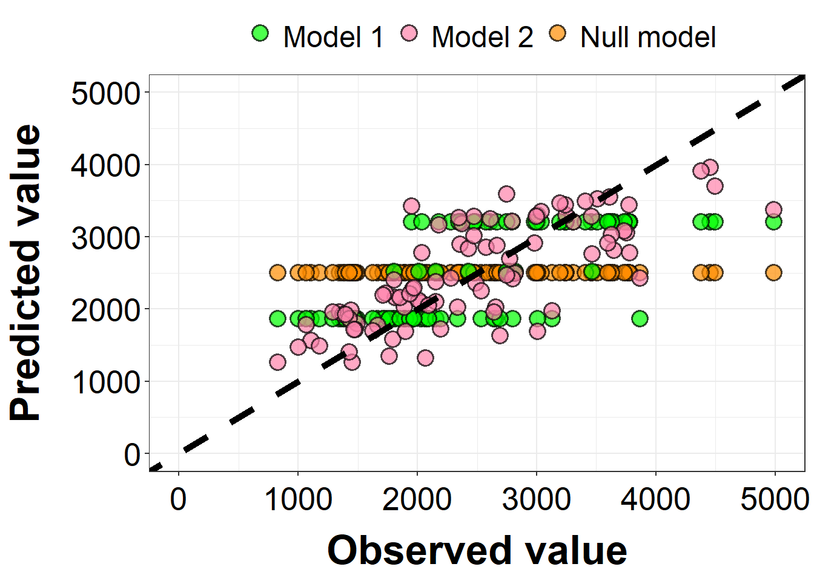
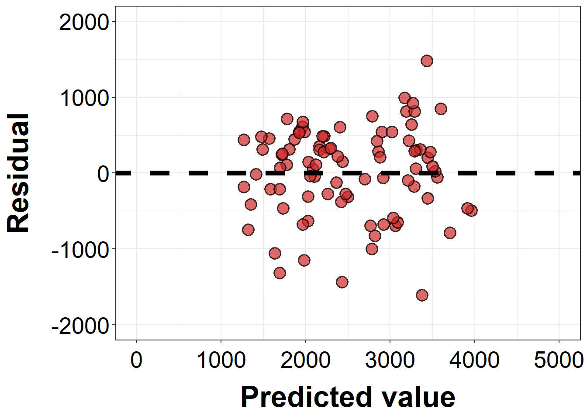
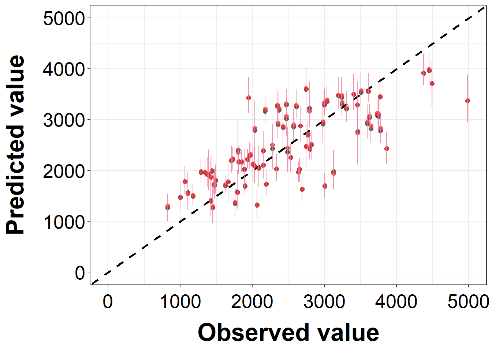
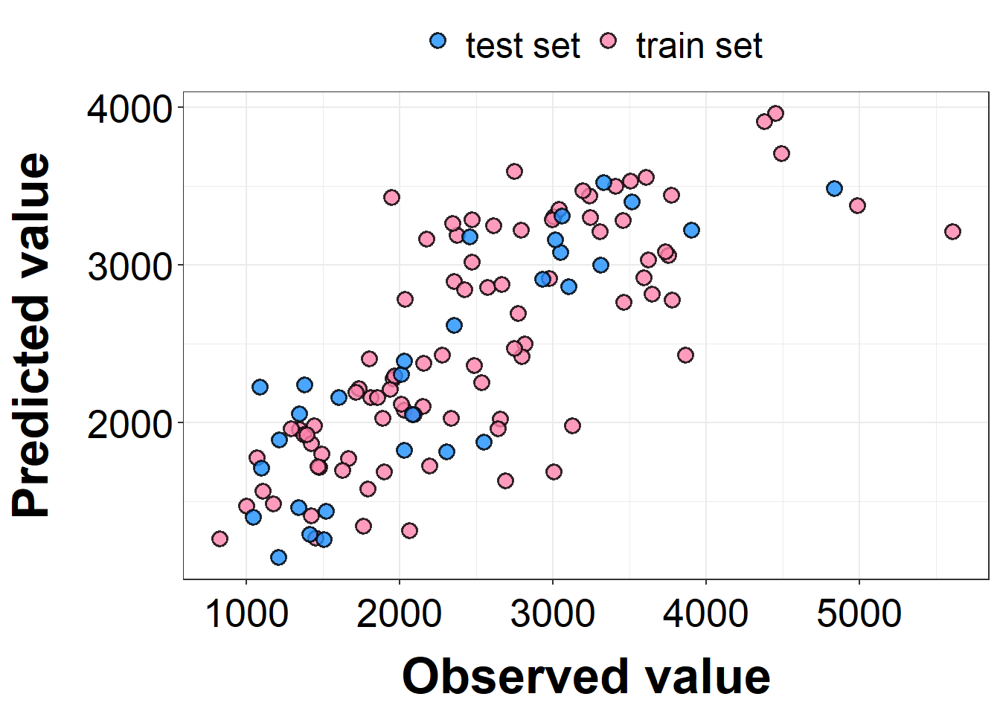

Below is an exercise for analyzing a data set called mavoglurant.
Data processing and exploration
First of all, let’s import the data set from the package nlmixr2data, and also load other required packages. Actually, the data file in the nlmixr2data package is different from the one on Github.
# Load required packagelibrary(here)
here() starts at C:/Users/86182/Desktop/EPID 8060E/MADA/GuozhengYang-MADA-portfolio
Warning: package 'scales' was built under R version 4.2.3
── Conflicts ───────────────────────────────────────── tidymodels_conflicts() ──
✖ scales::discard() masks purrr::discard()
✖ dplyr::filter() masks stats::filter()
✖ recipes::fixed() masks stringr::fixed()
✖ dplyr::lag() masks stats::lag()
✖ yardstick::spec() masks readr::spec()
✖ recipes::step() masks stats::step()
• Dig deeper into tidy modeling with R at https://www.tmwr.org
library(ggplot2)library(ggpubr)
Warning: package 'ggpubr' was built under R version 4.2.3
library(gtsummary)
Warning: package 'gtsummary' was built under R version 4.2.3
Attaching package: 'gtsummary'
The following object is masked from 'package:recipes':
all_numeric
library(gt)
Warning: package 'gt' was built under R version 4.2.3
library(corrplot)
corrplot 0.92 loaded
Now let’s take a first look at the mavoglurant dataset.
# Look at the datadata <-read.csv(here("fitting-exercise","Mavoglurant_A2121_nmpk.csv"))summary(data)
ID CMT EVID EVI2
Min. :793.0 Min. :1.000 Min. :0.00000 Min. :0.0000
1st Qu.:832.0 1st Qu.:2.000 1st Qu.:0.00000 1st Qu.:0.0000
Median :860.0 Median :2.000 Median :0.00000 Median :0.0000
Mean :858.8 Mean :1.926 Mean :0.07394 Mean :0.1613
3rd Qu.:888.0 3rd Qu.:2.000 3rd Qu.:0.00000 3rd Qu.:0.0000
Max. :915.0 Max. :2.000 Max. :1.00000 Max. :4.0000
MDV DV LNDV AMT
Min. :0.00000 Min. : 0.00 Min. :0.000 Min. : 0.000
1st Qu.:0.00000 1st Qu.: 23.52 1st Qu.:3.158 1st Qu.: 0.000
Median :0.00000 Median : 74.20 Median :4.306 Median : 0.000
Mean :0.09373 Mean : 179.93 Mean :4.085 Mean : 2.763
3rd Qu.:0.00000 3rd Qu.: 283.00 3rd Qu.:5.645 3rd Qu.: 0.000
Max. :1.00000 Max. :1730.00 Max. :7.456 Max. :50.000
TIME DOSE OCC RATE
Min. : 0.000 Min. :25.00 Min. :1.000 Min. : 0.00
1st Qu.: 0.583 1st Qu.:25.00 1st Qu.:1.000 1st Qu.: 0.00
Median : 2.250 Median :37.50 Median :1.000 Median : 0.00
Mean : 5.851 Mean :37.37 Mean :1.378 Mean : 16.55
3rd Qu.: 6.363 3rd Qu.:50.00 3rd Qu.:2.000 3rd Qu.: 0.00
Max. :48.217 Max. :50.00 Max. :2.000 Max. :300.00
AGE SEX RACE WT
Min. :18.0 Min. :1.000 Min. : 1.000 Min. : 56.60
1st Qu.:26.0 1st Qu.:1.000 1st Qu.: 1.000 1st Qu.: 73.30
Median :31.0 Median :1.000 Median : 1.000 Median : 82.60
Mean :32.9 Mean :1.128 Mean : 7.415 Mean : 83.16
3rd Qu.:40.0 3rd Qu.:1.000 3rd Qu.: 2.000 3rd Qu.: 90.60
Max. :50.0 Max. :2.000 Max. :88.000 Max. :115.30
HT
Min. :1.520
1st Qu.:1.710
Median :1.780
Mean :1.762
3rd Qu.:1.820
Max. :1.930
I wonder how many unique values are there in the variable DOSE. This is for the following plotting.
# Unique values in DOSEunique(data$DOSE)
[1] 25.0 37.5 50.0
Following the instructions, I will make a plot with DV on the y-axis and TIME on the x-axis. The lines should be grouped by three different DOSE levels.
# Plot: DV ~ TIME, grouped by DOSEdata %>%mutate(DOSE_fct=factor(DOSE, levels=c(25.0, 37.5, 50.0))) %>%ggplot(aes(x=TIME, y=DV, color=DOSE_fct))+geom_line(linewidth=1, alpha=.6)+scale_color_manual(name="Dose", values=c("deepskyblue1", "darkorange", "palevioletred1"))+labs(title="Change of DV by TIME, grouped by DOSE",x="Time", y="DV")+theme_bw()+theme(axis.title=element_text(size=10, color="black", face="bold"),axis.text=element_text(size=8, color="black"),plot.title=element_text(size=12, color="black", face="bold"),legend.position="top",legend.title=element_text(size=10, color="black", face="bold"),legend.text=element_text(size=8, color="black"))
Notice that some individuals received the drug more than once. Now I will only keep rows with OCC=1.
# Only keep OCC=1 rowsdata2 <- data %>%filter(OCC==1)# Look at data structuresummary(data2)
ID CMT EVID EVI2
Min. :793 Min. :1.000 Min. :0.00000 Min. :0.00000
1st Qu.:819 1st Qu.:2.000 1st Qu.:0.00000 1st Qu.:0.00000
Median :849 Median :2.000 Median :0.00000 Median :0.00000
Mean :851 Mean :1.928 Mean :0.07207 Mean :0.07207
3rd Qu.:882 3rd Qu.:2.000 3rd Qu.:0.00000 3rd Qu.:0.00000
Max. :915 Max. :2.000 Max. :1.00000 Max. :1.00000
MDV DV LNDV AMT
Min. :0.0000 Min. : 0.0 Min. :0.000 Min. : 0.000
1st Qu.:0.0000 1st Qu.: 20.5 1st Qu.:3.020 1st Qu.: 0.000
Median :0.0000 Median : 70.3 Median :4.253 Median : 0.000
Mean :0.1027 Mean : 176.2 Mean :4.022 Mean : 2.628
3rd Qu.:0.0000 3rd Qu.: 285.0 3rd Qu.:5.652 3rd Qu.: 0.000
Max. :1.0000 Max. :1550.0 Max. :7.346 Max. :50.000
TIME DOSE OCC RATE AGE
Min. : 0.000 Min. :25.00 Min. :1 Min. : 0.00 Min. :18.00
1st Qu.: 0.533 1st Qu.:25.00 1st Qu.:1 1st Qu.: 0.00 1st Qu.:26.00
Median : 2.250 Median :37.50 Median :1 Median : 0.00 Median :31.00
Mean : 6.430 Mean :36.52 Mean :1 Mean : 15.72 Mean :33.11
3rd Qu.: 8.200 3rd Qu.:50.00 3rd Qu.:1 3rd Qu.: 0.00 3rd Qu.:41.00
Max. :48.217 Max. :50.00 Max. :1 Max. :300.00 Max. :50.00
SEX RACE WT HT
Min. :1.000 Min. : 1.000 Min. : 56.60 Min. :1.520
1st Qu.:1.000 1st Qu.: 1.000 1st Qu.: 73.10 1st Qu.:1.700
Median :1.000 Median : 1.000 Median : 82.10 Median :1.770
Mean :1.136 Mean : 6.985 Mean : 82.36 Mean :1.758
3rd Qu.:1.000 3rd Qu.: 2.000 3rd Qu.: 90.10 3rd Qu.:1.810
Max. :2.000 Max. :88.000 Max. :115.30 Max. :1.930
Following the instructions, I will first create a new data frame without TIME=0 rows, and then calculate the sum of DV by ID.
# Create dataydatay <- data2 %>%filter(TIME!=0) %>%group_by(ID) %>%summarize(Y=sum(DV, na.rm=T))# Check the number of rows and columnsdim(datay)
[1] 120 2
As shown, the dimension of the new data frame is right. Then I will create another data frame with only TIME=0 rows.
# Create dataydata_t0 <- data2 %>%filter(TIME==0)# Check the number of rows and columnsdim(data_t0)
[1] 120 17
The dimension of data_t0 is right. Now I’m combining the two data frames by adding the new Y variable into the data_t0 data frame.
# Create dataydata_new <- data_t0 %>%left_join(datay, by="ID")# Check the number of rows and columnsdim(data_new)
[1] 120 18
The data dimension is right. Now I will do the final cleaning step: 1) convert RACE and SEX to factors; 2) only keep variables Y, DOSE, AGE, SEX, RACE, WT, and HT.
# Take a look at the unique values in SEX and RACEunique(data_new$RACE)
[1] 2 1 88 7
unique(data_new$SEX)
[1] 1 2
# Create dataydata_new <- data_new %>%mutate(RACE=factor(RACE, levels=c(1, 2, 7, 88)),SEX=factor(SEX, levels=c(1,2)),DOSE=factor(DOSE, levels=c(25, 37.5, 50))) %>%select(Y, DOSE, AGE, SEX, RACE, WT, HT)# Take a final look at the cleaned datasummary(data_new)
Y DOSE AGE SEX RACE WT
Min. : 826.4 25 :59 Min. :18.00 1:104 1 :74 Min. : 56.60
1st Qu.:1700.5 37.5:12 1st Qu.:26.00 2: 16 2 :36 1st Qu.: 73.17
Median :2349.1 50 :49 Median :31.00 7 : 2 Median : 82.10
Mean :2445.4 Mean :33.00 88: 8 Mean : 82.55
3rd Qu.:3050.2 3rd Qu.:40.25 3rd Qu.: 90.10
Max. :5606.6 Max. :50.00 Max. :115.30
HT
Min. :1.520
1st Qu.:1.700
Median :1.770
Mean :1.759
3rd Qu.:1.813
Max. :1.930
EDA revisited
First of all, I want to make a summary table to show the distribution of each variable.
# Summary table for all variablesdata_new %>%tbl_summary(type=list(where(is.numeric) ~"continuous"),statistic=list(all_continuous() ~"{median} ({p25}, {p75})"),digits=all_continuous() ~0,label=list(Y ~"Response", DOSE ~"Drug dose", AGE ~"Age", SEX ~"Sex", RACE ~"Race", WT ~"Weight", HT ~"Height")) %>%as_gt() %>%tab_options(table.font.names="Times New Roman")
Characteristic
N = 1201
Response
2,349 (1,701, 3,050)
Drug dose
25
59 (49%)
37.5
12 (10%)
50
49 (41%)
Age
31 (26, 40)
Sex
1
104 (87%)
2
16 (13%)
Race
1
74 (62%)
2
36 (30%)
7
2 (1.7%)
88
8 (6.7%)
Weight
82 (73, 90)
Height
2 (2, 2)
1 Median (IQR); n (%)
Now I want to show the difference in the variables between different SEX and RACE. For RACE, I only want to look at those with RACE=1 or RACE=2. The two tables are shown below.
# Summary table for all variables by SEXdata_new %>%tbl_summary(by=SEX, type=list(where(is.numeric) ~"continuous"),statistic=list(all_continuous() ~"{median} ({p25}, {p75})"),digits=list(all_continuous() ~0, HT ~2),label=list(Y ~"Response", DOSE ~"Drug dose", AGE ~"Age", RACE ~"Race", WT ~"Weight", HT ~"Height")) %>%add_p(test=list(all_continuous() ~"wilcox.test",all_categorical() ~"fisher.test"), pvalue_fun=function(x) style_number(x, digits=3)) %>%modify_header(p.value="*p*-value") %>%modify_spanning_header(all_stat_cols() ~"**Sex**") %>%as_gt() %>%tab_style(style=cell_text(weight="bold"), locations=cells_body(columns=p.value, rows=as.numeric(p.value)<0.05)) %>%tab_options(table.font.names="Times New Roman")
Characteristic
Sex
p-value2
1, N = 1041
2, N = 161
Response
2,398 (1,727, 3,072)
2,060 (1,491, 2,698)
0.296
Drug dose
0.364
25
49 (47%)
10 (63%)
37.5
10 (9.6%)
2 (13%)
50
45 (43%)
4 (25%)
Age
30 (25, 39)
42 (38, 45)
0.000
Race
0.324
1
63 (61%)
11 (69%)
2
33 (32%)
3 (19%)
7
1 (1.0%)
1 (6.3%)
88
7 (6.7%)
1 (6.3%)
Weight
83 (75, 92)
70 (64, 81)
0.001
Height
1.78 (1.73, 1.82)
1.63 (1.58, 1.66)
0.000
1 Median (IQR); n (%)
2 Wilcoxon rank sum test; Fisher’s exact test
# Summary table for all variables by RACEdata_new %>%filter(RACE==1| RACE==2) %>%mutate(RACE=factor(RACE, levels=c(1,2))) %>%tbl_summary(by=RACE, type=list(where(is.numeric) ~"continuous"),statistic=list(all_continuous() ~"{median} ({p25}, {p75})"),digits=list(all_continuous() ~0, HT ~2),label=list(Y ~"Response", DOSE ~"Drug dose", AGE ~"Age", SEX ~"Sex", WT ~"Weight", HT ~"Height")) %>%add_p(test=list(all_continuous() ~"wilcox.test",all_categorical() ~"fisher.test"), pvalue_fun=function(x) style_number(x, digits=3)) %>%modify_header(p.value="*p*-value") %>%modify_spanning_header(all_stat_cols() ~"**Race**") %>%as_gt() %>%tab_style(style=cell_text(weight="bold"), locations=cells_body(columns=p.value, rows=as.numeric(p.value)<0.05)) %>%tab_options(table.font.names="Times New Roman")
Characteristic
Race
p-value2
1, N = 741
2, N = 361
Response
2,349 (1,507, 3,044)
2,406 (1,774, 3,077)
0.649
Drug dose
0.252
25
32 (43%)
21 (58%)
37.5
10 (14%)
2 (5.6%)
50
32 (43%)
13 (36%)
Age
36 (26, 42)
30 (27, 38)
0.254
Sex
0.543
1
63 (85%)
33 (92%)
2
11 (15%)
3 (8.3%)
Weight
83 (74, 90)
83 (75, 92)
0.962
Height
1.78 (1.71, 1.82)
1.77 (1.69, 1.81)
0.599
1 Median (IQR); n (%)
2 Wilcoxon rank sum test; Fisher’s exact test
As shown, no significant difference exists between RACE=1 and RACE=2. However, those with Sex=2 have older age, lighter weight, and shorter height. Now I want to see the association between Y and other continuous predictors (AGE, WT, HT).
# Scatterplot: Y ~ AGEsct_plot1 <-ggplot(data_new, aes(x=AGE, y=Y))+geom_point(size=3, fill="seagreen1", color="black", stroke=1, shape=21)+labs(title="Scatterplot: Y ~ AGE",x="Age", y="Y")+theme_bw()+theme(axis.title=element_text(size=10, color="black", face="bold"),axis.text=element_text(size=8, color="black"),plot.title=element_text(size=12, color="black", face="bold"))# Scatterplot: Y ~ WTsct_plot2 <-ggplot(data_new, aes(x=WT, y=Y))+geom_point(size=3, fill="dodgerblue1", color="black", stroke=1, shape=21)+labs(title="Scatterplot: Y ~ WT",x="Weight", y="Y")+theme_bw()+theme(axis.title=element_text(size=10, color="black", face="bold"),axis.text=element_text(size=8, color="black"),plot.title=element_text(size=12, color="black", face="bold"))# Scatterplot: Y ~ HTsct_plot3 <-ggplot(data_new, aes(x=HT, y=Y))+geom_point(size=3, fill="darkorange1", color="black", stroke=1, shape=21)+labs(title="Scatterplot: Y ~ HT",x="Height", y="Y")+theme_bw()+theme(axis.title=element_text(size=10, color="black", face="bold"),axis.text=element_text(size=8, color="black"),plot.title=element_text(size=12, color="black", face="bold"))# Combine and output the three scatterplotsggarrange(sct_plot1, sct_plot2, sct_plot3, ncol=3, nrow=1, align="h", heights=c(1, 1, 1))
As shown, no evident association exist between Y and the three continuous predictors. No I want to look at the distribution of Y across different categories of SEX, RACE, and DOSE.
# Boxplot: Y ~ SEXbox_plot1 <-ggplot(data_new, aes(x=SEX, y=Y))+geom_boxplot(fill="palevioletred1", color="palevioletred1", width=.2, linewidth=1, alpha=.6)+labs(title="Boxplot: Y ~ SEX",x="Sex", y="Y")+theme_bw()+theme(axis.title=element_text(size=10, color="black", face="bold"),axis.text=element_text(size=8, color="black"),plot.title=element_text(size=12, color="black", face="bold"))# Boxplot: Y ~ RACEbox_plot2 <- data_new %>%filter(RACE==1| RACE==2) %>%ggplot(aes(x=RACE, y=Y))+geom_boxplot(fill="skyblue1", color="skyblue1", width=.2, linewidth=1, alpha=.6)+labs(title="Boxplot: Y ~ RACE",x="Race", y="Y")+theme_bw()+theme(axis.title=element_text(size=10, color="black", face="bold"),axis.text=element_text(size=8, color="black"),plot.title=element_text(size=12, color="black", face="bold"))# Boxplot: Y ~ DOSEbox_plot3 <-ggplot(data_new, aes(x=DOSE, y=Y))+geom_boxplot(fill="gold1", color="gold1", width=.2, linewidth=1, alpha=.6)+labs(title="Boxplot: Y ~ DOSE",x="Dose", y="Y")+theme_bw()+theme(axis.title=element_text(size=10, color="black", face="bold"),axis.text=element_text(size=8, color="black"),plot.title=element_text(size=12, color="black", face="bold"))# Combine and output the three boxplotsggarrange(box_plot1, box_plot2, box_plot3, ncol=3, nrow=1, align="h", heights=c(1.5, 1.5, 1))
As shown, Y is positively associated with higher DOSE. Now I want to check whether DOSE is associated with AGE, WT, or HT. I will use grouped density plots to examine it.
Then I will look at the distrbution of the two categorical variables SEX and RACE by DOSE. I will use dodged bar plot to show this.
# Bar plot: SEX ~ DOSEbar_plot1 <-ggplot(data_new, aes(x=SEX, fill=DOSE))+geom_bar(position="dodge", color="steelblue3", width=.5, linewidth=1)+scale_fill_manual(name="Dose", breaks=levels(data_new$DOSE), values=c("firebrick4", "darkolivegreen3", "mediumpurple3"))+labs(title="Bar plot: SEX ~ DOSE",x="Sex", y="Count")+theme_bw()+theme(axis.title=element_text(size=10, color="black", face="bold"),axis.text=element_text(size=8, color="black"),plot.title=element_text(size=12, color="black", face="bold"),legend.position="top",legend.title=element_text(size=10, color="black", face="bold"),legend.text=element_text(size=8, color="black"))# Bar plot: RACE ~ DOSEbar_plot2 <- data_new %>%filter(RACE==1| RACE==2) %>%ggplot(aes(x=RACE, fill=DOSE))+geom_bar(position="dodge", color="steelblue3", width=.5, linewidth=1)+scale_fill_manual(name="Dose", breaks=levels(data_new$DOSE), values=c("firebrick4", "darkolivegreen3", "mediumpurple1"))+labs(title="Bar plot: RACE ~ DOSE",x="Race", y="Count")+theme_bw()+theme(axis.title=element_text(size=10, color="black", face="bold"),axis.text=element_text(size=8, color="black"),plot.title=element_text(size=12, color="black", face="bold"),legend.position="top",legend.title=element_text(size=10, color="black", face="bold"),legend.text=element_text(size=8, color="black"))# Combine and output the two bar plotsggarrange(bar_plot1, bar_plot2, ncol=2, nrow=1, align="h", heights=c(1, 1), common.legend=T)
As shown above, DOSE=37.5 is the least assigned dose level across different sex or race. SEX=1 and RACE=1 received most dose compared to SEX=2 or RACE=2. For the continuous variables, I want to get their correlation matrix shown as a figure.
As shown, HT is positively associated with WT, but negatively associated with AGE. WT also has a negative correlation with Y. All the rest correlations are weak.
Model fitting
First of all, I want to fit a simple linear regression model using Y as the response and DOSE as the predictor. I will use the tidymodels routine to do this fitting.
# Linear regression: Y ~ DOSEmodel1 <-linear_reg() %>%set_engine("lm") %>%fit(Y ~ DOSE, data_new)# Output the fitting resulttidy(model1)
According to the output, both DOSE=37.5 (\(\beta=681\), se=214) and DOSE=50 (\(\beta=1456\), se=130) are positively associated with higher Y. And increasing DOSE usage will result in higher Y. Using DOSE=50 will result in a higher increase in Y compared to using DOSE=37.5.
Next, I will regress the response Y on all predictors.
# Linear regression: Y ~ all predictorsmodel2 <-linear_reg() %>%set_engine("lm") %>%fit(Y ~ ., data_new)# Output the fitting resulttidy(model2)
According to the fitting result, besides higher dose usage, higher Y is also associated with lower weight (\(\beta=-23.28\), se=6.44). A weak association was found for age, sex, race, and height.
Now I’m printing out the RMSE and R-squared from the two linear regression models.
# Print RMSE and R-squared for both modelsresults1 <-predict(model1, data_new) %>%bind_cols(data_new) %>%metrics(truth=Y, estimate=.pred) %>%print()
# A tibble: 3 × 3
.metric .estimator .estimate
<chr> <chr> <dbl>
1 rmse standard 666.
2 rsq standard 0.516
3 mae standard 517.
# A tibble: 3 × 3
.metric .estimator .estimate
<chr> <chr> <dbl>
1 rmse standard 590.
2 rsq standard 0.620
3 mae standard 445.
According to the output, the RMSE for the first model is 666 and the R-squared is 0.52. For the second model, the RMSE is 590 and the R-squared is 0.62. In other words, putting in all predictors can better fit the data compared to only using DOSE, as the second model has a lower RMSE but a higher R-squared.
I will fit the next logistic regression model using SEX as my response and DOSE as the predictor. The SEX variable has two levels 1 and 2, while 1 is the reference group.
# Logistic regression: SEX ~ DOSEmodel3 <-logistic_reg() %>%set_engine("glm") %>%set_mode("classification") %>%fit(SEX ~ DOSE, data_new)# Output the fitting resulttidy(model3)
As shown, being SEX=1 is more likely to receive all three level of dose usage compared to SEX=2. The intercept denote the log odds of SEX=2 (vs SEX=1) when given DOSE=25. The coefficients -0.02 (se=0.85) and -0.83 (se=0.63) denote the change of log-odds when given DOSE=37.5 and DOSE=50, respectively. Next, I will fit the logistic regression with all predictors.
# Logistic regression: SEX ~ all predictorsmodel4 <-logistic_reg() %>%set_engine("glm") %>%set_mode("classification") %>%fit(SEX ~ DOSE + AGE + RACE + WT + HT, data_new)# Output the fitting resulttidy(model4)
Still, dose usage is a significant predictor for SEX. When including all predictors, higher probability of being SEX=2 is also associated with lower HT (\(\beta=-33.26\), se=10.72). Now I’m printing out the accuracy and ROC-AUC from the two logistic regression models.
# Print RMSE and R-squared for both modelsresults3 <-predict(model3, data_new, type="class") %>%bind_cols(predict(model3, data_new, type="prob")) %>%bind_cols(data_new) %>%metrics(truth=SEX, estimate=.pred_class, .pred_1) %>%print()
As shown, for the logistic regression model only using DOSE as the predictor, the classification accuracy is 0.87 and the ROC-AUC is 0.59. For the second logistic regression model using all predictors, the accuracy is 0.95 and the ROC-AUC is 0.98. By comparison, using all predictors has a better classification performance than using just DOSE. Though this research question does not make scientific science, but the assessment for the two models are straight forward for choosing the better one.
Below is an exercise for Week 10.
Data prep
First, let’s continue using the formatted dataset and only keep variables Y, DOSE, AGE, SEX, WT, and HT.
Y DOSE AGE SEX WT
Min. : 826.4 25 :59 Min. :18.00 1:104 Min. : 56.60
1st Qu.:1700.5 37.5:12 1st Qu.:26.00 2: 16 1st Qu.: 73.17
Median :2349.1 50 :49 Median :31.00 Median : 82.10
Mean :2445.4 Mean :33.00 Mean : 82.55
3rd Qu.:3050.2 3rd Qu.:40.25 3rd Qu.: 90.10
Max. :5606.6 Max. :50.00 Max. :115.30
HT
Min. :1.520
1st Qu.:1.700
Median :1.770
Mean :1.759
3rd Qu.:1.813
Max. :1.930
Now I’m setting a seed rngseed and split the dataset into a 75% train set and a 25% test set.
# Set seedrngseed <-1234set.seed(rngseed)# Split dataset into a 75% train set and a 25% test setdata_split <-initial_split(data_new10, prop=.75)train_data <-training(data_split)test_data <-testing(data_split)
Model fitting
I will fit two linear regression models on the training set. The first one only uses DOSE as the predictor.
# Linear regression: Y ~ DOSEmodel1_train <-linear_reg() %>%set_engine("lm") %>%fit(Y ~ DOSE, train_data)# Output the fitting resulttidy(model1_train)
The second model will use all predictors. But the fit is still on the traning set.
# Linear regression: Y ~ DOSE + AGE + SEX + WT + HTmodel2_train <-linear_reg() %>%set_engine("lm") %>%fit(Y ~ ., train_data)# Output the fitting resulttidy(model2_train)
I will print RMSE for the two models fitted above.
# Print RMSE for the two models above.results1_train <-predict(model1_train, train_data) %>%bind_cols(train_data) %>%metrics(truth=Y, estimate=.pred) %>%print()
# A tibble: 3 × 3
.metric .estimator .estimate
<chr> <chr> <dbl>
1 rmse standard 703.
2 rsq standard 0.451
3 mae standard 546.
# A tibble: 3 × 3
.metric .estimator .estimate
<chr> <chr> <dbl>
1 rmse standard 627.
2 rsq standard 0.563
3 mae standard 486.
I will fit a null model with only an intercept to compare RMSE.
# Fit the null modelmodel0_train <-null_model() %>%set_engine("parsnip") %>%set_mode("regression") %>%fit(Y ~ ., train_data)# Output the fitting resulttidy(model0_train)
# A tibble: 1 × 1
value
<dbl>
1 2509.
# Print RMSE for the null modelresults0_train <-predict(model0_train, train_data) %>%bind_cols(train_data) %>%metrics(truth=Y, estimate=.pred) %>%print()
Warning: There was 1 warning in `dplyr::summarise()`.
ℹ In argument: `.estimate = metric_fn(truth = Y, estimate = .pred, na_rm =
na_rm)`.
Caused by warning:
! A correlation computation is required, but `estimate` is constant and has 0 standard deviation, resulting in a divide by 0 error. `NA` will be returned.
# A tibble: 3 × 3
.metric .estimator .estimate
<chr> <chr> <dbl>
1 rmse standard 948.
2 rsq standard NA
3 mae standard 765.
According to the output, the model with only an intercept has the highest RMSE=948. The model with only DOSE as the predictor has the second highest RMSE=703. The model with all predictors included has the lowest RMSE=627. Just based on RMSE, the most complex model has the best performance on the training set, as its RMSE is the lowest.
Model performance assessment 2
I will apply a 10-fold cross-validation (CV) to examine the performance of the two models. The CV will be conducted on the training set, which will be split into 10 groups with 9 of them used for model fitting. First of all, let’s split the data.
# Set seedset.seed(rngseed)# 10-fold samplingfolds <-vfold_cv(train_data, v=10)folds
Now, let’s fit the first model (with only DOSE as a predictor) to 9 of the splits for 10 times, and calculate the RMSE for the last split.
# Model settingmodel1_spec <-linear_reg() %>%set_engine("lm")# Set the workflow: model 1cv_model1 <-workflow() %>%add_model(model1_spec) %>%add_formula(Y ~ DOSE)# Set seedset.seed(rngseed)# Fit the datacv_model1_fit <- cv_model1 %>%fit_resamples(folds)# Mean of RMSEcollect_metrics(cv_model1_fit) %>%filter(.metric=="rmse") %>%pull(mean)
[1] 696.7098
# Standard error of RMSEcollect_metrics(cv_model1_fit) %>%filter(.metric=="rmse") %>%pull(std_err)
[1] 68.09511
Similarly, I will run model2 following the same routine and calcualte the mean RMSE.
# Model settingmodel2_spec <-linear_reg() %>%set_engine("lm")# Set the workflow: model 2cv_model2 <-workflow() %>%add_model(model2_spec) %>%add_formula(Y ~ .)# Set seedset.seed(rngseed)# Fit the datacv_model2_fit <- cv_model2 %>%fit_resamples(folds)# Mean of RMSEcollect_metrics(cv_model2_fit) %>%filter(.metric=="rmse") %>%pull(mean)
[1] 652.7739
# Standard error of RMSEcollect_metrics(cv_model2_fit) %>%filter(.metric=="rmse") %>%pull(std_err)
[1] 63.59876
According to the output above, model 1 has a smaller mean RMSE compared to fitting on the whole training set (697<703). However, model 2 has a larger mean RMSE when fitted using the 10-fold CV (653>627). When comparing both models in the 10-fold CV, model 2 has a more stable performance than model 1 as its standard error of mean RMSE is smaller (64<68).
Now, let’s set a different seed and repeat what we did to check if the conclusion still holds.
# Set seedset.seed(111)# 10-fold samplingfolds_ns <-vfold_cv(train_data, v=10)# Model1:# Set seedset.seed(111)cv_model1_fit_ns <- cv_model1 %>%fit_resamples(folds_ns)# Mean of RMSEcollect_metrics(cv_model1_fit_ns) %>%filter(.metric=="rmse") %>%pull(mean)
[1] 690.6832
# Standard error of RMSEcollect_metrics(cv_model1_fit_ns) %>%filter(.metric=="rmse") %>%pull(std_err)
[1] 64.01245
# Model2:# Set seedset.seed(111)cv_model2_fit_ns <- cv_model2 %>%fit_resamples(folds_ns)# Mean of RMSEcollect_metrics(cv_model2_fit_ns) %>%filter(.metric=="rmse") %>%pull(mean)
[1] 657.9127
# Standard error of RMSEcollect_metrics(cv_model2_fit_ns) %>%filter(.metric=="rmse") %>%pull(std_err)
[1] 46.0654
As shown, the conclusion still holds after setting a new seed. But considering the small sample size, this is likely a “lucky” result that more validations are needed.
This section added by Hope Grismer
The code below is to visualize model fitting from the null model, model 1, and model 2.
# Null model: prediction on the train setpred_model0_gz <-predict(model0_train, train_data) %>%bind_cols(train_data["Y"])colnames(pred_model0_gz) <-c("pred", "Y")# Model 1: prediction on the train setpred_model1_gz <-predict(model1_train, train_data) %>%bind_cols(train_data["Y"])colnames(pred_model1_gz) <-c("pred", "Y")# Model 2: prediction on the train setpred_model2_gz <-predict(model2_train, train_data) %>%bind_cols(train_data["Y"])colnames(pred_model2_gz) <-c("pred", "Y")# Combine the three data sets and make a plotcomb_gz <-rbind(pred_model0_gz, pred_model1_gz, pred_model2_gz) %>%mutate(Model=c(rep("Null model", nrow(pred_model0_gz)), rep("Model 1", nrow(pred_model1_gz)), rep("Model 2", nrow(pred_model2_gz)))) %>%ggplot(aes(x=Y, y=pred, fill=Model))+geom_point(size=4, stroke=1, alpha=0.7, shape=21)+geom_abline(intercept=0, slope=1, linetype="dashed", color="black", linewidth=2)+scale_fill_manual(name="", values=c("green","palevioletred1","darkorange"))+scale_x_continuous(limits=c(0, 5000))+scale_y_continuous(limits=c(0, 5000))+labs(x="Observed value", y="Predicted value")+theme_bw()+theme(axis.title.x=element_text(size=25,color="black",margin=margin(t=15),face="bold"),axis.title.y=element_text(size=25,color="black",margin=margin(r=15),face="bold"),axis.text.x=element_text(color="black",size=20,vjust=0),axis.text.y=element_text(color="black",size=20,hjust=1), legend.position="top",legend.title=element_text(size=20), legend.text=element_text(size=18,vjust=0))comb_gz
Warning: Removed 3 rows containing missing values or values outside the scale range
(`geom_point()`).

As shown, the predictions from the null model form a horizontal line because it only predicts the mean value of the response. The predictions from model 1 show three GREEN horizontal lines since this model uses DOSE as the only predictor, which has three possible values.
Now, I’m moving on to create a residual plot for model 2.
Warning: Removed 1 row containing missing values or values outside the scale range
(`geom_point()`).

The graph shown suggests that model 2 is performing well overall because even though there are a few points with smaller residuals, the points are randomly scattered around y=0.
Model predictions and uncertainty
Now I want to run a bootstrap to evaluate model 2. The code for that is shown below.
library(rsample)# Set seedset.seed(rngseed)# Bootstrap: 100dat_bs <-bootstraps(train_data, times=100)# Model settingmodel2_spec <-linear_reg() %>%set_engine("lm")# Fit model 2 on 100 bootstraps and store the predictionspred_bs <-matrix(NA, nrow=nrow(dat_bs), ncol=nrow(train_data))for (i inseq_len(nrow(dat_bs))){ fit_i <-fit(model2_spec, Y ~ ., analysis(dat_bs$splits[[i]])) preds_i <-predict(fit_i, new_data=train_data)$.pred pred_bs[i,] <- preds_i}# Calculate 95% CIspreds <- pred_bs |>apply(2, quantile, c(0.025, 0.5, 0.975)) |>t()# Make a plot to show the estimatesplot_est_gz <- train_data %>%mutate(point_est=pred_model2_gz$pred,median=preds[,2],lower=preds[,1],upper=preds[,3]) %>%ggplot(aes(x=Y))+geom_abline(intercept=0, slope=1, linetype="dashed", color="black", linewidth=1)+geom_point(aes(y=point_est), color="gray20", size=2, shape=16, alpha=.8)+geom_point(aes(y=median), color="firebrick2", size=2, shape=16, alpha=.8)+geom_errorbar(aes(ymin=lower, ymax=upper), width=.2, color="palevioletred2", alpha=.8)+labs(x="Observed value", y="Predicted value")+scale_x_continuous(limits=c(0, 5000))+scale_y_continuous(limits=c(0, 5000))+theme_bw()+theme(axis.title.x=element_text(size=25,color="black",margin=margin(t=15),face="bold"),axis.title.y=element_text(size=25,color="black",margin=margin(r=15),face="bold"),axis.text.x=element_text(color="black",size=20,vjust=0),axis.text.y=element_text(color="black",size=20,hjust=1)) plot_est_gz
Warning: Removed 1 row containing missing values or values outside the scale range
(`geom_point()`).
Removed 1 row containing missing values or values outside the scale range
(`geom_point()`).

Based on the output, the bootstrapping results are pretty much in line with just fitting model 2 on the train set. Almost all the confidence intervals (in red) cover the point predictions (in black). Looking at the big picture, the data points are spread around the diagonal, which means the predicted values are pretty close to the observed ones. So, overall, we can say that model 2 is performing well based on this.
End of Hope Grismer’s contribution
Final evaluation using test data
Now I want to fit model 2 onto the test set. I will make a plot for predicted values versus observed values for the fit on both the training set and the test set.
# Model 2: prediction on the train setpred_model2_train <-predict(model2_train, train_data) %>%bind_cols(train_data["Y"])colnames(pred_model2_train) <-c("pred", "Y")# Model 2: prediction on the test setpred_model2_test <-predict(model2_train, test_data) %>%bind_cols(test_data["Y"])colnames(pred_model2_test) <-c("pred", "Y")# Combine the two data sets and make a plotmodel2_plot <-rbind(pred_model2_train, pred_model2_test) %>%mutate(set=c(rep("train set", nrow(train_data)), rep("test set", nrow(test_data)))) %>%ggplot(aes(x=Y, y=pred, fill=set))+geom_point(size=3, stroke=1, alpha=0.8, shape=21)+scale_fill_manual(name="", values=c("dodgerblue1","palevioletred1"))+labs(x="Observed value", y="Predicted value")+theme_bw()+theme(axis.title.x=element_text(size=25,color="black",margin=margin(t=15),face="bold"),axis.title.y=element_text(size=25,color="black",margin=margin(r=15),face="bold"),axis.text.x=element_text(color="black",size=20,vjust=0),axis.text.y=element_text(color="black",size=20,hjust=1), legend.position="top",legend.title=element_text(size=20), legend.text=element_text(size=18,vjust=0))model2_plot

As shown, data points from the train set and the test set are well mixed.
Overall model assessment
Based on all evaluation conducted above, the null model is not really helpful as no predictors are included. Theoretically, the null model only predicts the mean value of the response, while some variation could be explained by the available predictors. This is proved by its high RMSE and the visualization.
Model 1 appears better than the null model, as its RMSE is smaller. However, according to the visualization, the discrete predictor DOSE is not necessarily the best. But this model does have an evident improvement compared to the null model. The 10-fold CV results also demonstrate that this model has a stable performance on the test set.
Model 2 includes all the predictors and have the lowest RMSE compared to the other two models. However, its performance in the 10-fold CV indicates that it potentially has an over-fitting problem. I think its performance on the test set is acceptable, but a feature selection procedure may make it more concise and improve its performance on unseen data to some extent.